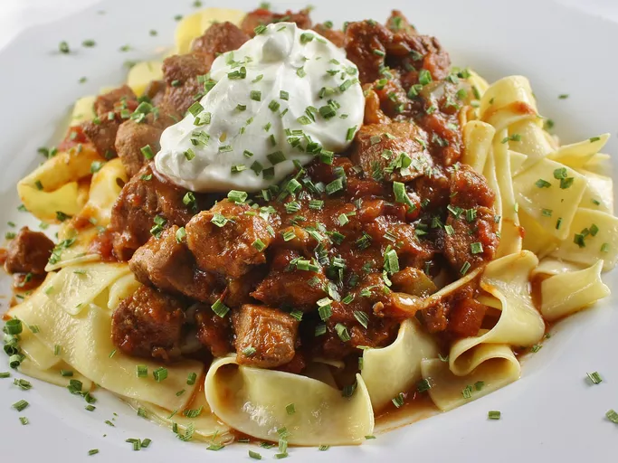

<-Back
Porkolt

A flavorful stew, Pörkölt is redolent with the fragrance of paprika and bell peppers. It has few
ingredients, and is surprisingly easy to make. Save time by using boneless pork chops and cubing them
after they are browned. There should be enough salt in the canned tomatoes to season the stew, but if
not, add more to your taste. Use best-quality, real Hungarian paprika for best results. We prefer to
serve it with noodles, but galuska (Hungarian dumplings) or rice are good, too.
Ingridients
- 5 slices bacon, diced
- 2 large onions, diced
- 2 tablespoons chile paste
- 1 large yellow bell pepper, seeded and diced
- ⅔ cup beef broth
Steps:
- Place the bacon in a large, deep skillet, and cook over medium-high heat until evenly browned, about
10 minutes. Drain, and reserve the drippings. Add the onions to the bacon and cook together until
the onion is translucent. Remove skillet from heat and stir the paprika, garlic powder, and pepper
into the bacon mixture. Transfer the mixture into a large stockpot.
- Heat a small amount of the reserved bacon drippings in the skillet again over medium-high heat. Cook
the pork chops in batches in the hot drippings until evenly browned on both sides. Use additional
bacon drippings for each batch as needed. Remove the pork chops to a cutting board and blot excess
fat off the surface of the chops with a paper towel; cut into bite-sized cubes and stir into the
bacon mixture.
- Heat a small amount of the bacon drippings in the skillet; cook and stir the bell pepper in the hot
drippings until softened and fragrant; drain on a plate lined with paper towels. Stir the cooked
pepper into the bacon mixture.